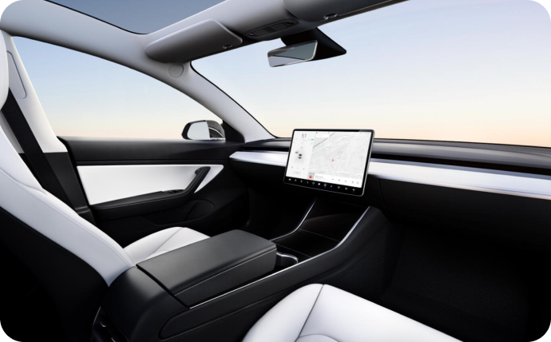

Un Tesla sin volante por 25.000 dólares para 2023:
Elon Musk deja la puerta abierta a que el rumoreado 'Model 2' sea completamente autónomo

Durante el pasado Battery Day, el propio Elon Musk confirmó que están preparando un modelo con un precio de 25.000 dólares. Un reducido coste que previsiblemente en España acabe siendo superior, pero que refleja bien la intención de la compañía de apostar por un vehículo más asequible e intentar alcanzar nuevos conductores. O quizás deberíamos decir pasajeros. Según informa Electrek, Elon Musk ha informado a los empleados de Tesla la intención de lanzar este nuevo vehículo en 2023, con el añadido de anticipar y dejar la puerta abierta a que no esté equipado con volante.
Comentarios
María Otto
3 Septiembre 2021
Es extremadamente positivista en los tiempos, pero al final, mucho de lo que vende lo acaban haciendo, así que si para el 2023 planea tener este coche, veamos si en el 2026 está en carretera.